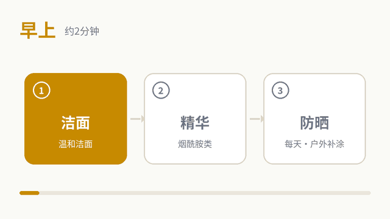
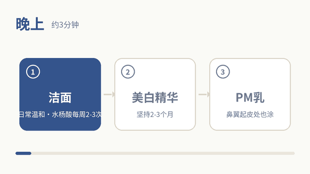
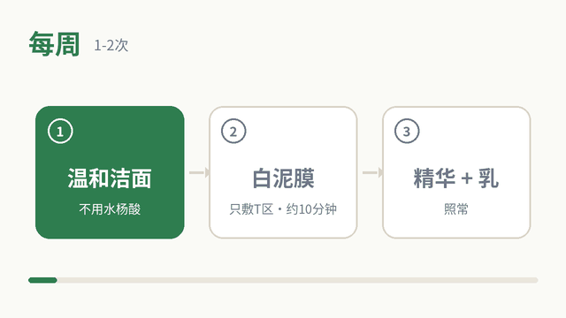

适用：45岁油皮、有色斑的男士。常见情况是出油多、毛孔粗、鼻头有黑头，鼻翼容易起皮（屏障偏弱），两颊和颧骨有浅褐色斑，眼角有细纹。按最少步骤来，早晚各3步。
45岁男士护肤：防晒最重要，它是淡斑的核心；其次是每天坚持用美白精华，面膜只是辅助。
45岁男士护肤：防晒最重要，它是淡斑的核心；其次是每天坚持用美白精华，面膜只是辅助。
早上

- 温和洁面
- 精华（烟酰胺类）
- 防晒（每天，户外每2小时补涂）
出油多可以只用精华不加乳液；鼻翼起皮处薄涂一点PM乳。防晒是淡斑的核心，阴天、室内靠窗也要涂。
晚上

- 温和洁面（每周2-3晚换成水杨酸洁面）
- 美白精华（烟酰胺/传明酸）
- PM乳（鼻翼、起皮处也要涂）
美白精华需要连续用2-3个月才看得出变化，中途不要频繁换。
每周 1-2 次

- 温和洁面
- 白泥膜只敷T区约10分钟后洗净
- 精华 + PM乳照常
泥膜避开起皮的位置；用水杨酸洁面的当天不敷泥膜。
可省略 / 合并
- 爽肤水：可以省略。
- 早上：精华和乳液二选一即可，防晒不能省。
- 水杨酸洁面每周2-3次，不要天天用；与泥膜错开日子。
- 鼻翼起皮时暂停水杨酸和泥膜，先用温和洁面 + PM乳修护几天。
价格为2026年10月前后比价/线报网站上的参考价，多数需叠券，未在官方页面核实；下单前以天猫/京东官方旗舰店或自营页面为准。
洁面
适乐肤 舒缓净颜洁面泡沫 473ml（日常）
氨基酸表活、神经酰胺、透明质酸；温和，适合每天早晚用。
参考价：京东自营约76-91元
理肤泉 清痘净肤舒缓洁面泡沫 125ml（日常备选）
控油型泡沫洁面；全成分未核对。
参考价：天猫超市叠券约59元（日常129元）
适乐肤 水杨酸洁面泡沫 236ml（每周2-3次）
水杨酸（宣称2%，未核对）、神经酰胺；用于鼻头黑头和毛孔，不要天天用。
参考价：京东自营约93-98元
精华
珀莱雅 双抗精华 3.0 30ml
烟酰胺、麦角硫因、二肽-4、肌肽；官方成分表不含乙醇，含香精。
参考价：约104-116元（含赠品）
OLAY 水光小白瓶 30ml
5%烟酰胺、抗坏血酸葡糖苷、十一碳烯酰基苯丙氨酸；新版有香调。初用烟酰胺先少量建立耐受。
参考价：约124-182元
乳液
适乐肤 熬夜修护PM乳 60ml
4%烟酰胺、3种神经酰胺；品牌宣称不添加酒精，质地清爽。全脸薄涂，鼻翼和起皮处也要涂。
参考价：京东约80-88元
防晒
薇诺娜 清透防晒乳 SPF48 PA+++ 50g
物理+化学防晒；成分表无乙醇，轻薄不泛白。每天用，户外每2小时补涂。
参考价：约55-70元（含第三方店）
面膜
科颜氏 亚马逊白泥净致面膜 125ml
高岭土、膨润土、燕麦、芦荟；不含乙醇和香精。每周1-2次，只敷T区，避开起皮处。
参考价：叠券约96元
自然堂 烟酰胺细致美白安瓶面膜
美白特证，4%烟酰胺、VC衍生物、B5；成分表无乙醇。
参考价：5片约40元
OLAY 超红瓶 胜肽面膜
棕榈酰五肽-4、蓝铜胜肽，偏紧致；官方称无酒精。
参考价：现价未核实
关于色斑
- 两颊、颧骨成片的浅褐色斑可能是黄褐斑，受刺激（摩擦、去角质、强酸）会加重，护肤要温和。
- 建议先看皮肤科确认斑的类型；确诊后，激光或光子（IPL）等治疗通常比护肤见效快。
- 如果有痣在大小、颜色或边缘上发生变化，请尽快找皮肤科医生检查。
尽量避开
- 高酒精防晒（如安热沙金瓶）：油皮虽清爽但刺激偏高。
- 高浓度酸类、磨砂、浓香精产品。
- 网红、白牌或价格异常低的产品。
提示
- 本页为一般性护肤建议，不能代替皮肤科诊疗；出现刺痛、泛红持续不退请停用。